Lo que ve un autor mientras personaliza el museo, en el orden en que lo ve, capturado
en un navegador real a 1440×900 y a 420×860. Debajo, los defectos encontrados mirando
estas imágenes, no ejecutando aserciones.
Superficie de revisión humana. No es una aprobación: el producto lo aprueba Juanma.
15capturas
15defectos vistos
9corregidos
5aplazados a criterio
1sin resolver
nodesbordamiento a 420 px
Defectos encontrados por Claude
Ordenados por severidad de producto. Sólo se han corregido los bloqueantes y lo que impedía que
la evidencia dijera la verdad; el resto se deja visible y sin tocar, con la corrección propuesta.
La sala seguía mostrando la obra original después de aplicar. En consola: unknown media kind "video".
Por qué
La configuración nombra los medios en minúscula (image / video); el mundo exige IMAGE / VIDEO. La entidad no validaba y se quedaba con su medio anterior. Ninguna de las 18 comprobaciones lo vio porque el mundo no lanza: registra y sigue.
Corrección
Traducción en la única frontera que se cruza (applyConfigToWorld), y el tester escucha ahora la consola además de las excepciones.
Al elegir vídeo, la imagen cargada un momento antes desaparecía sin avisar.
Por qué
Los dos selectores escribían en la misma ranura de la obra seleccionada. Además el vídeo aterrizaba sobre un lienzo enmarcado, cuando la propia etiqueta prometía «se aplica a la proyección».
Corrección
Cada medio va a la entidad que puede mostrarlo: la imagen a la obra en edición, el vídeo a la proyección de la sala, descubierta del registro y nombrada en la etiqueta.
Cada «aplicar» dejaba otro editor apilado sobre el anterior
Se ve
El editor no se cerraba después de aplicar. Se pedía cerrarlo, la orden se ejecutaba, y el panel seguía ahí.
Por qué
Aplicar re-arranca la experiencia, y el re-arranque volvía a montar el panel sin retirar el anterior: dos nodos con el mismo id="au". getElementById devolvía el viejo, de modo que se ocultaba el panel de debajo mientras el visible se quedaba. Cada aplicación añadía uno más, con su propio botón EDITAR.
Corrección
El montaje retira el anterior. La herramienta de captura, además, cuenta los paneles del documento y lo registra como error si hay más de uno: el defecto se escondía precisamente en que la comprobación miraba un solo elemento.
La proyección autorizada no se parece a la proyección original, y no sé por qué
Se ve
Sin autoría (12b) la pantalla de Galería B es ancha, con marco claro e imagen azulada. Con el vídeo autorizado (10b) es un cuadrado verde sin marco. El verde es el de «marea-baja.jpg», que es la imagen, no el vídeo.
Por qué
NO DETERMINADA. El registro es correcto —medido tras aplicar: entity.video.cuaderno-de-luz · PROJECTION · VIDEO con un blob vivo—, así que el dato llega donde debe. Lo que no sé es qué dibuja el Scene Kit con él. Las dos capturas además no son comparables: pese a fijar la misma pose, la de referencia acabó en otro sitio de la sala, seguramente porque la cámara todavía pertenecía a la llegada del portal.
Qué falta
NO SE TOCA. Hace falta (a) una comparación de verdad, misma pose y misma sala, esperando a que la cámara vuelva a EXPLORE, y (b) leer qué textura acaba en la superficie de proyección. Corregir esto a ojo sería inventar una causa. Es la primera pregunta pendiente del paquete y no debería aprobarse la vertical sin respuesta.
La cabecera decía «Museo de la Bruma» y la pared seguía diciendo «Fundación Arenas»
Se ve
En la prueba de segunda institución, el panel de bienvenida del vestíbulo —lo primero que lee un visitante— conservaba el nombre, la datación y el texto de la institución anterior.
Por qué
La configuración sólo escribía metadatos del mundo. La cartela institucional es una entidad con su propio contenido y nadie la tocaba. Del mismo defecto venía otro más silencioso: el campo INTRODUCCIÓN se escribía en un metadato que no lee nadie, así que el texto que un autor redactaba no aparecía en ninguna parte del museo.
Corrección
La señalética institucional (TEXT / wall-panel) se firma con la institución; la cartela del espacio de entrada toma además el claim como título, las fechas como datación y la introducción como texto —que es donde ese texto debía estar desde el principio. Se añade un campo FECHAS DE LA COLECCIÓN, porque sin él una segunda institución heredaba la datación de la anterior o la perdía sin poder declararla. La configuración base se lee ahora de la propia cartela, de modo que el Museo por defecto vuelve palabra por palabra —comprobado, no supuesto.
El selector de obra ofrecía una pared como primera «obra»
Se ve
OBRA EN EDICIÓN aparecía con «Colección permanente» seleccionada de entrada: la cartela de bienvenida del vestíbulo, no una obra. Un autor que escribiera un título sin cambiar el selector estaba reescribiendo la señalética institucional desde la sección equivocada.
Por qué
La lista se construía con «toda entidad que tenga título», y la señalética tiene título.
Corrección
La lista es de obras: ARTWORK, SCULPTURE, PROJECTION y AUDIO. La señalética se edita donde le corresponde, en INSTITUCIÓN.
La cabecera fija tapa el campo que hay debajo al hacer scroll
Se ve
El campo NOMBRE aparece cortado por la mitad bajo la cabecera «Edición».
Por qué
Comportamiento normal de position:sticky sin margen de desplazamiento.
Propuesta
PROPUESTA: scroll-margin-top en los campos, o cabecera más baja al hacer scroll. No se toca ahora: es legibilidad, no una promesa rota, y cambia la proporción del panel.
El título del panel no sigue lo que el autor escribe
Se ve
Se teclea «Colección Marés» en NOMBRE y el panel sigue titulándose «Fundación Arenas — Colección permanente».
Por qué
El título muestra config.label, que es el nombre del documento, no el de la institución.
Propuesta
PROPUESTA: titular con el nombre de la institución en vivo y bajar el label a subtítulo. Es una decisión de qué está editando el autor —un museo o un documento— y la toma Juanma.
Los selectores de archivo hablan inglés dentro de una herramienta en español
Se ve
«CHOOSE FILE / No file chosen» en las tres secciones con medios.
Por qué
Texto del navegador; ::file-selector-button da estilo pero no contenido.
Propuesta
PROPUESTA: input oculto tras un <label> propio («Elegir archivo»), con el estado real ya escrito debajo por el panel. Diez líneas, ninguna consecuencia funcional.
Bajo carga, las capturas de «aplicado» fotografiaban la pantalla de carga
Se ve
Con dos navegadores compitiendo por la CPU, seis capturas salieron negras con «Compilando materiales…» en lugar de la sala.
Por qué
Tras aplicar se esperaba a __IW.ready, que seguía valiendo true del arranque anterior: la espera volvía en el acto. En una máquina rápida colaba; en una lenta, no. Una espera que sólo funciona cuando no hace falta esperar.
Corrección
Se baja la bandera antes de aplicar, de modo que la espera sea de flanco. Este defecto no se vio en la primera tanda: apareció al mirar la segunda.
La captura de la proyección no podía demostrar nada
Se ve
El fixture de vídeo es el mismo archivo que la sala ya proyectaba, así que la imagen sale idéntica se haya aplicado o no.
Por qué
Se eligió un fixture del propio repositorio por honestidad —probar una subida con un archivo que ya está en el producto— sin advertir que eso hacía la foto indistinguible.
Corrección
Se mide dónde aterrizó la referencia autorizada y se publica junto al fotograma. Las dos obras enfocadas se capturan ahora con el editor cerrado, para que la obra se vea entera.
Las tres capturas «sala aplicada» fotografiaban el panel saliendo
Se ve
Se pedía ocultar el editor y se disparaba la foto en el mismo instante; el panel tarda 0,32 s en salir. Las tres pruebas de «cómo queda la sala» mostraban el editor encima.
Por qué
La herramienta no esperaba a la transición.
Corrección
Un dismissEditor() que espera. La evidencia de esta tanda ya es la buena.
09 y 10 eran idénticas byte a byte. Se enfocaba desde el vestíbulo una obra que está en Galería A, con la sala todavía sin construir: el HUD se iba, la cámara no se movía.
Por qué
La herramienta pedía el foco sin llevar antes al visitante donde está la obra.
Corrección
Cruzar el portal y situarse, como hace el estado determinista que ya existía para esto. Se añade además una captura de la proyección de Galería B, porque el vídeo ahora aterriza allí.
Recorrido del autor
Museo por defecto · editar institución · editar obra · subir imagen y vídeo · aplicar ·
ver el resultado en la sala · segunda institución · volver al original.
01_museum_defaultMuseo por defecto — Fundación Arenas, editor cerrado
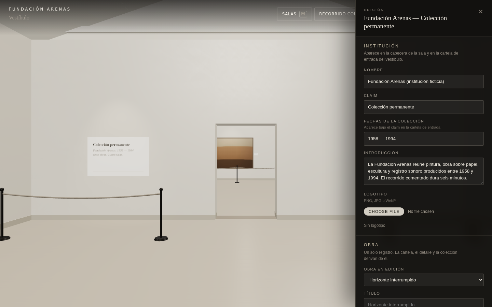
02_editor_openEditor abierto sobre la sala
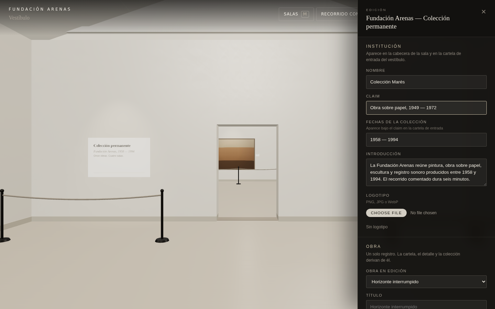
03_institution_editInstitución editada, cambios sin aplicar
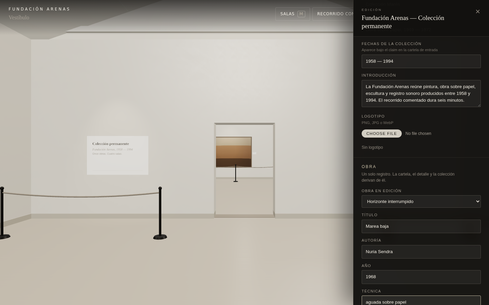
04_artwork_editObra editada — un solo registro semántico05_media_selectedImagen seleccionada — estado en el panel06_media_readyImagen lista, con nombre y dimensiones reales07_video_readyVídeo: Listo · cuaderno-de-luz.webm · 960×540 · 6.4 s
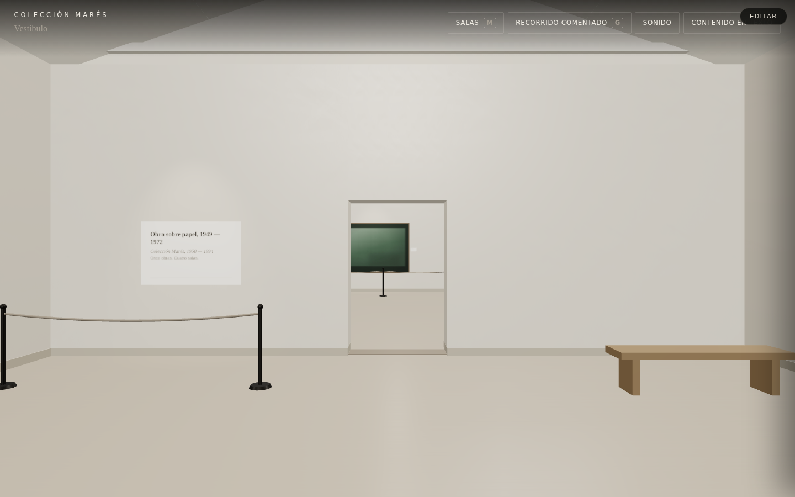
08_applied_museumAplicado — el vestíbulo con la institución autorizada
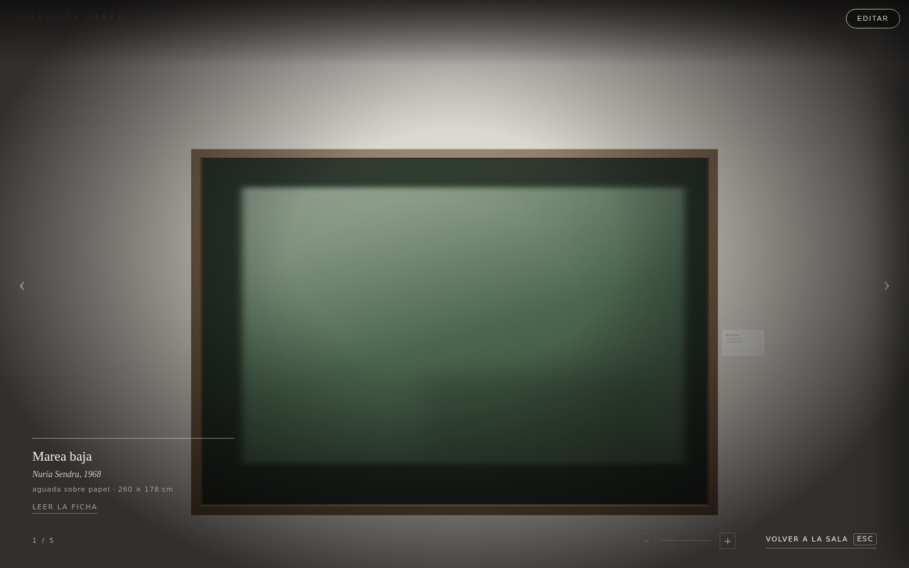
09_focus_updatedFocus sobre la obra autorizada — imagen y cartela del autor
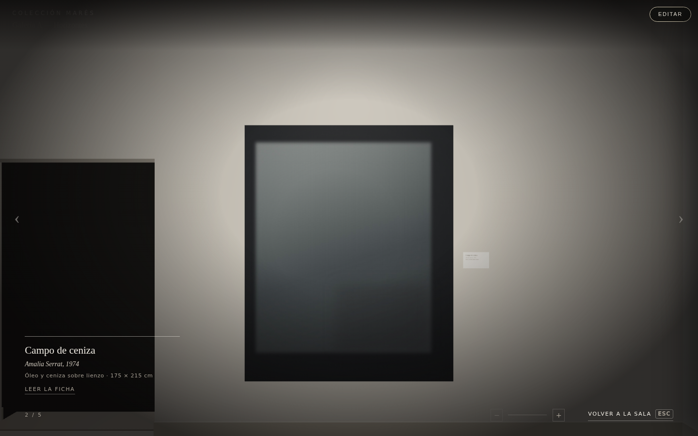
10_browse_updatedCollection Browse tras la obra autorizada
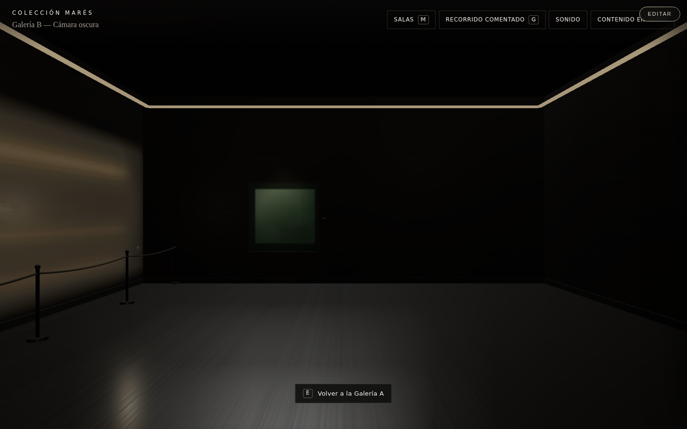
10b_projection_updatedProyección de Galería B con el vídeo autorizado
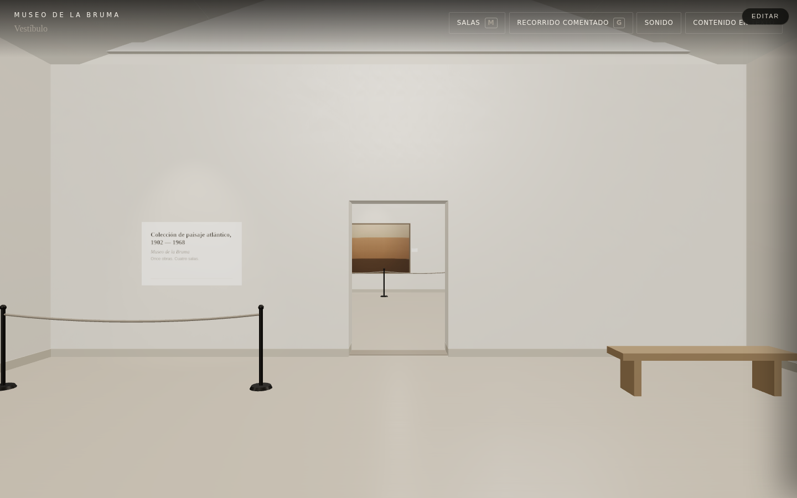
11_museum_bMuseo de la Bruma — segunda institución, mismo motor
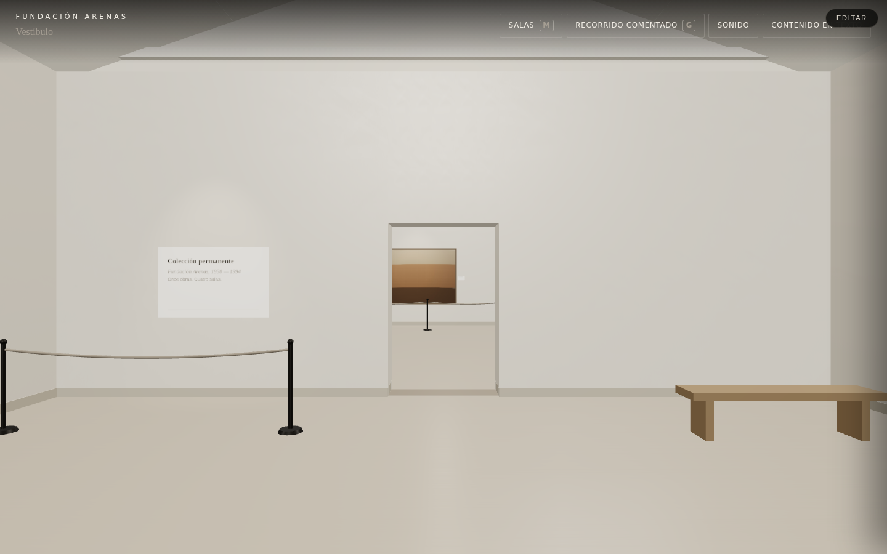
12_restored_originalFundación Arenas restaurada
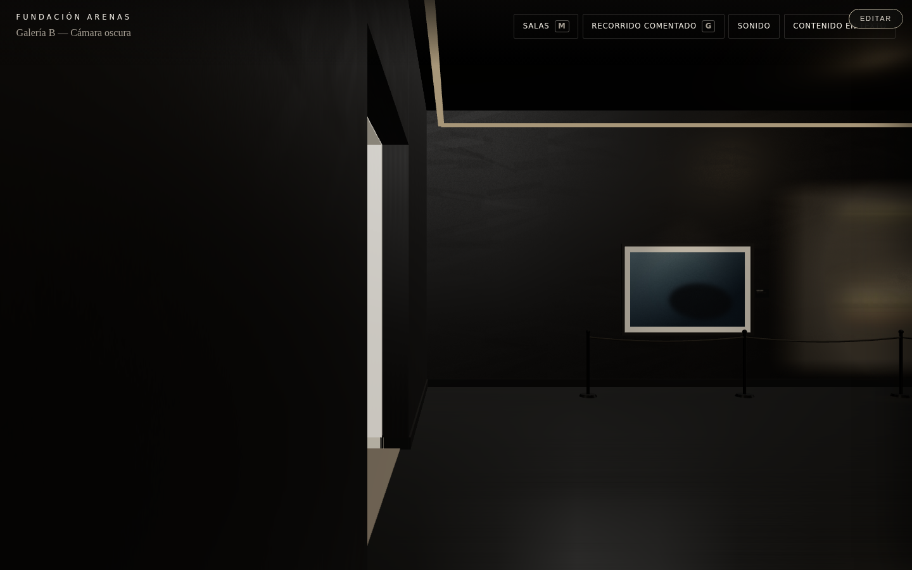
12b_projection_originalLa misma proyección sin autoría — referencia de comparación
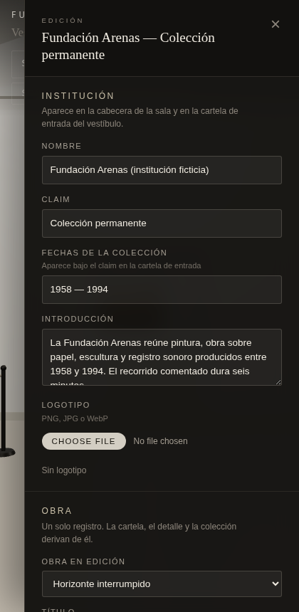
13_mobile_editorEditor a 420 px — comprobación de anchura
Condiciones de la captura
Navegador real (Chromium, rasterizado por software), ficheros reales del propio repositorio.
Generado 2026-08-13T21:36:33.527Z · fixtures marea-baja.jpg · cuaderno-de-luz.webm ·
estado del vídeo: Listo · cuaderno-de-luz.webm · 960×540 · 6.4 s ·
consola: limpia.
Medios autorizados presentes en el mundo tras aplicar —dónde aterrizó cada archivo, medido, no
fotografiado: entity.artwork.horizonte-interrumpido · ARTWORK · IMAGE · entity.video.cuaderno-de-luz · PROJECTION · VIDEO.
Puerta. Esto queda a la espera de revisión de Juanma y de ChatGPT. Nada se ha promovido,
nada se ha fusionado, y la rama sigue siendo claude/immersive-worlds-module-c0d3f7.
Lo aplazado está aplazado a propósito: son decisiones de producto, no deuda escondida.